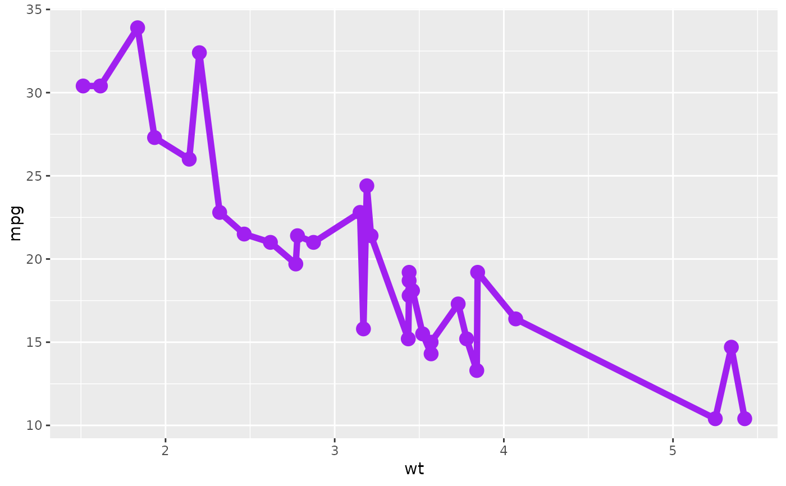

A container for lazy ggplot layers
ggpacket.Rdggpackets present a mechanism for easily collecting loose ggplot
layers into objects that can be reused across multiple plots, as well as
handling of hierarchical argument propegation, as well as data and aesthetic
scoping.
Arguments
- ...
Arguments passed on to
ggpacket_calldataThe data argument to use for all layers within the
ggpacketmappingThe aesthetic mapping to use as a basis for all layers within the
ggpacket. Layer-specific mappings will update the value of the mapping, and assigning..reset..to any aesthetic field will return the propegated aesthetic mapping to a default, unmapped state for that layer..idan optional identifier tag for the
ggpacket, used for filtering arguments and aesthetics that are propegated into the containedggplotlayers.
Details
The ggpacket object behaves like a function, returning an updated
ggpacket. As well, it contains a few slots which can be used for
programmatically accessing the lazy ggplot calls.
Within ggpacket and subsequent ggplot layer calls, aesthetic
mappings can contain references to previously mapped aesthetics using the
double-dot keywords (e.g. ..x..). In addition, the keyword
..reset.. can be used to revert aesthetics within the ggpacket
or layer to an un-specified state.
Because ggpackets will tolerate a more flexible syntax for layer
specifications, it's preferrable to use the ggplot composition
operator %+% (instead of +). This allows for duplicate
argument names and non-standard aesthetics to be passed, which are both
handled internally within the ggpacket call, but will trigger
warnings when using a bare +.
Slots
dataA lazy reference to the
dataparameter of theggpacket, allowing for scoping the data used by a block ofggplotlayers.mappingA lazy reference to the
mappingparameter of theggpacket, allowing for scoping of aesthetic mappings over a block ofggplotlayers.dotsQuosures representing arguments to be passed to all of the
ggpacket'sggplotlayers.ggcallsA list containing the layers stored within the
ggpacket
Examples
library(ggplot2)
# create a ggpacket directly, setting some fixed argument settings
ggpk_simple <- ggpacket() %+% geom_line(color = "red") %+% geom_point()
ggplot(mtcars, aes(x = wt, y = mpg)) + ggpk_simple()
# any non-fixed arguments can be modified in the ggpacket call
ggplot(mtcars, aes(x = wt, y = mpg)) + ggpk_simple(color = "green")
# arguments can be specified for only specific layers by prefixing them
ggplot(mtcars, aes(x = wt, y = mpg)) + ggpk_simple(point.size = 5)
# allow masking of preset arguments by wrapping the ggpacket in a function
ggpk_func <- function(...) {
ggpacket() %+%
geom_line(...) %+%
geom_point(color = "red", ...)
}
ggplot(mtcars, aes(x = wt, y = mpg)) +
ggpk_func(color = "purple", size = 2, point.size = 4)
